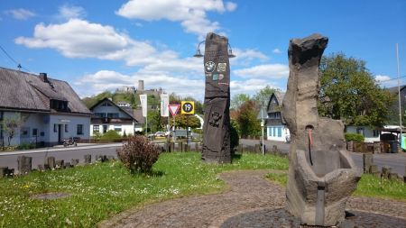
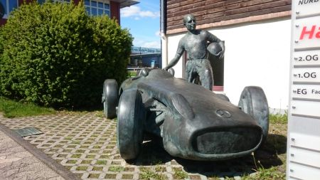
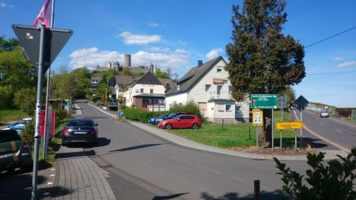
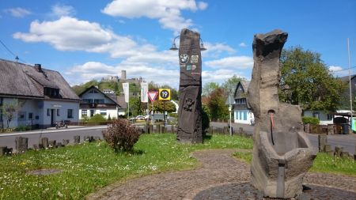
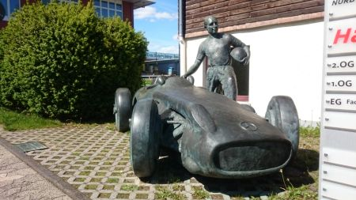
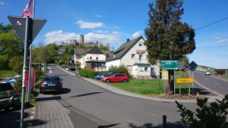

After heading for nearby Trier we get on Autobahn 1. The road may evoke thoughts of the countries Nazi past, but this section was actually built in the 70's and 80's. Without speed restrictions, most cars cruise at 80-90mph, although we were quite happy at 120mph. The trucks are still moving at 90kmh though, something to keep in mind when you're slowing down to exit.
Nurburg is a village which had a grand plan to put itself on the map, and today its name reverberates around the world of motorsport. There's more than just cars here, history abounds, but for petrolheads it's like Mecca!
 
 

 